正文: 好久不来，谢邀。
包臀裙，本身就是个难免要展示身材的单品，在穿包臀裙的时候，最容易形成的风格就是“成熟”或“性感”或“职业知性”。
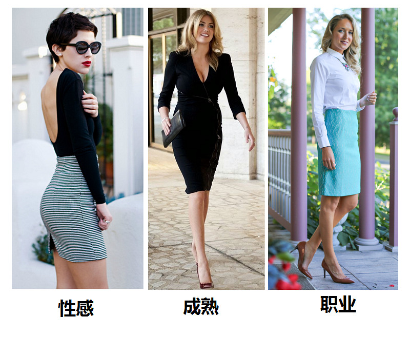然而，这里已经有许多答案是在展现这三种风格了，包括几个高票答主，又美又拉轰。
但作为一个“穿得不自在会死星人”，Pan想分享的是：怎么把包臀裙穿得既休闲又有型。
大家有没有发现，国内女生并不怎么喜欢穿包臀裙和一步裙（铅笔裙？反正就是屁股那儿包紧的一种东西！）反正，我经过细致灵敏的观察发现，中国女性迷恋的裙子类型一只手数得出：直筒裙、百褶裙、太阳裙、伞裙、蓬蓬裙。
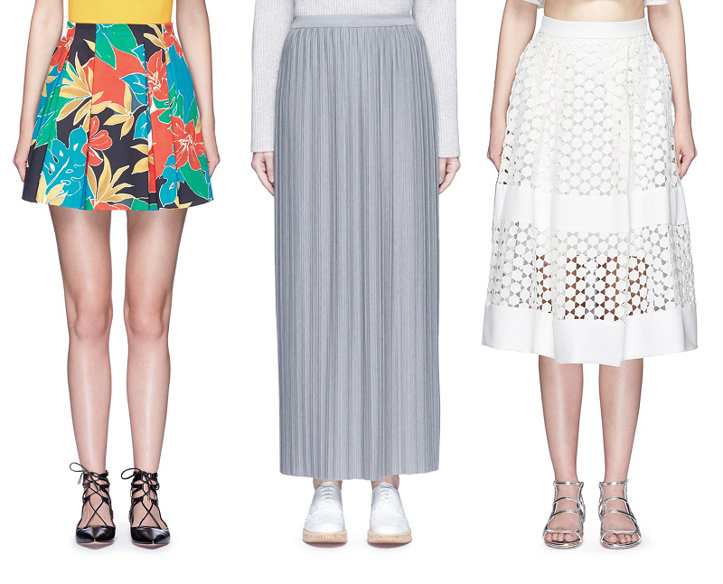
其实包臀裙是可以很休闲、很日常的，不是每个人都要穿成韩剧女律师或性感女网红，一步裙的世界，既美丽又辽阔。
一、包臀裙该怎么选？
1、从长短上，包臀裙理所当然是分为下摆到大腿处的短款、下摆在膝盖上下一点点的中长款和下摆到小腿处的长款。
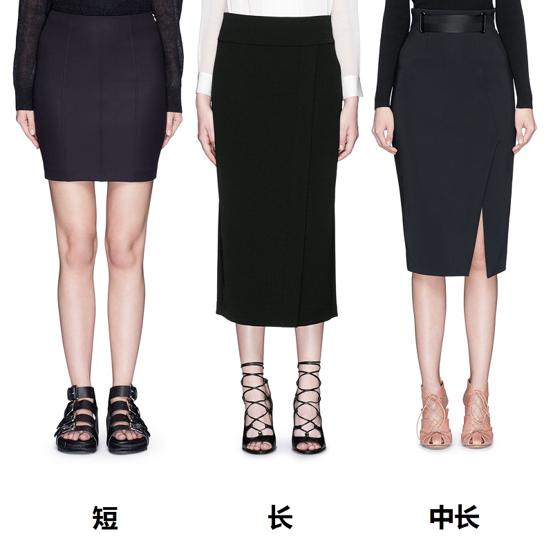
短款的，不建议各位经常穿，尤其是在夏季，气质容易出问题，偶尔用来在春秋冬季节搭配还行。
长款的，身高不高、腿长不够、比例不好、屁股不翘的各位请彻底地放弃吧，反正，以“显腿长”为人生宗旨的我，从来不碰这个地雷。
中长款，就是它了，我们今天要聊的主角，永远出不了岔子的中长款。
娇小的姑娘怕撑不起来可以选择到膝盖上一点点的长度。
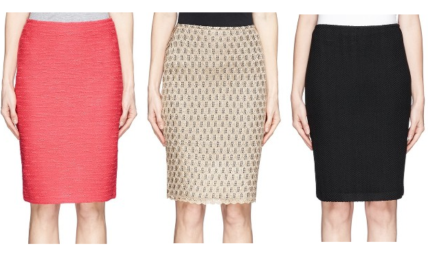2、从质地剪裁上，常见的包臀裙分为弹力质地上紧下紧的和包臀不包腿的。
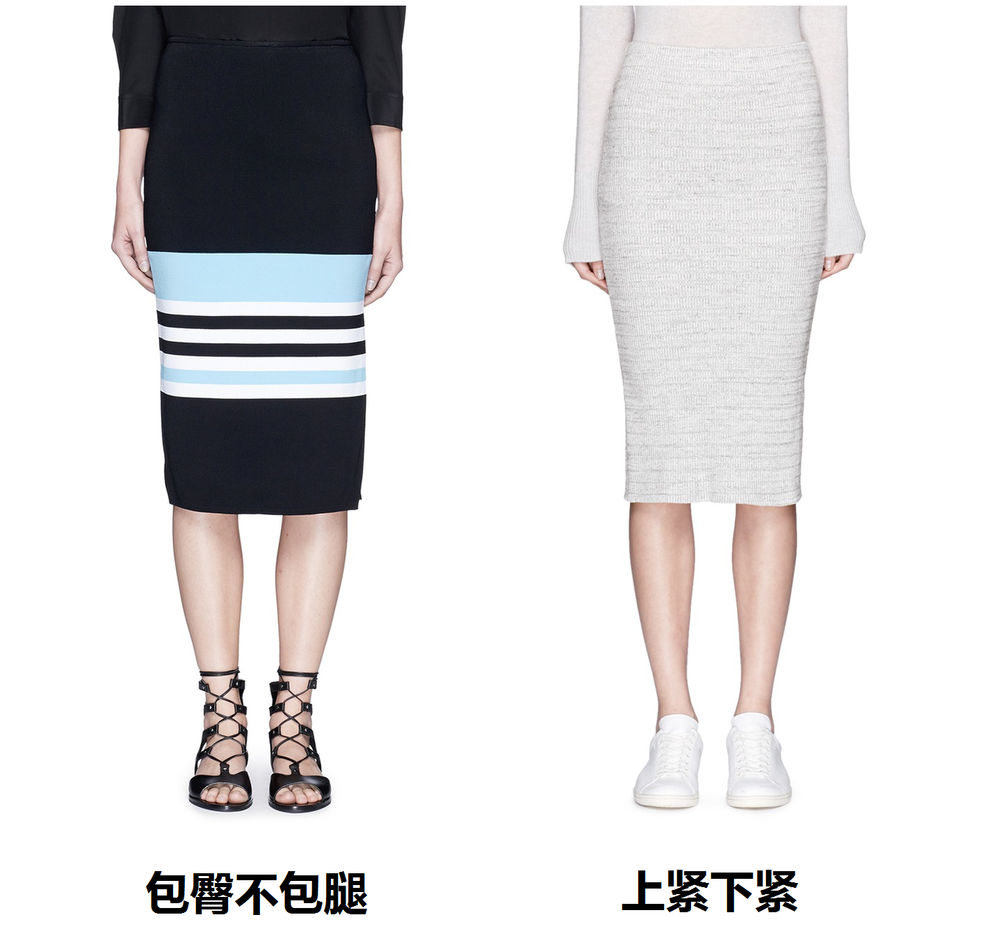
上紧下紧的款式，必然会自带一定程度的性感，身材不完美的各位咱还是绕着走的好。
包臀不包腿的，信我，你值得拥有！！！
3、2016年来势汹汹的“不对称设计”在包臀裙被运用得格外多，用来打破包臀裙单调的刻板印象，如果怕太呆板的姑娘也可以选择类似的款式。
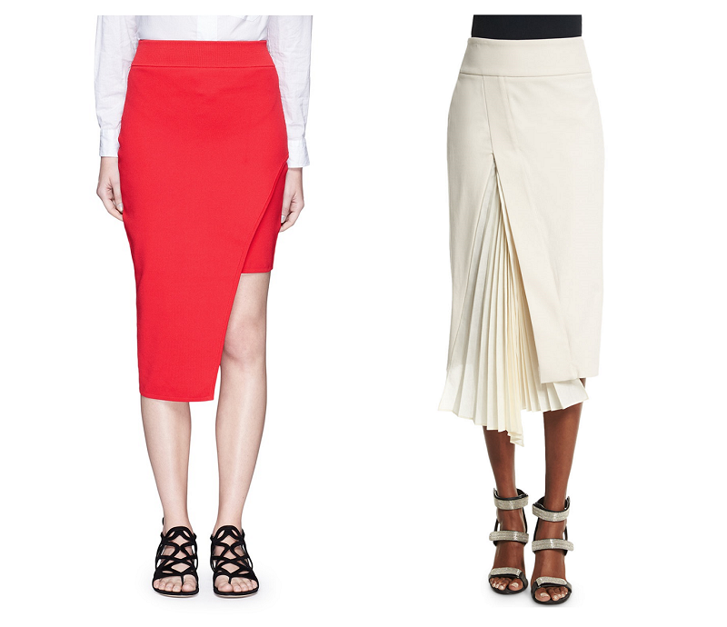4、请大家注意，高腰的包臀裙一步裙一定实用过低腰和中腰的。
购买高腰包臀裙时候，一看腰围二看臀围，臀围必须适当的紧一点，而腰围应该适当的松一点，这样裙子会在屁股的地方卡住（超烂的词穷！)从而不会发生位移上下乱跑，但同时又不会坐下来过后显得腰部勒肉。
二、非工作时间一步裙怎么穿才够休闲时尚？
想要休闲又轻松举重若轻的穿包臀裙一步裙，但又保持风格的和谐，Pan的搭配思路一般就按照下面四种方式来走。
1、勇敢把球鞋和帆布鞋穿起来！
这个时代是有些疯狂，以前觉得不可能的搭配现在都变成了时髦，严肃的一切都应该被打破，不破不立嘛。
各位以为包臀裙最不能搭配的球鞋和帆布鞋，正好就该赶快穿起来！
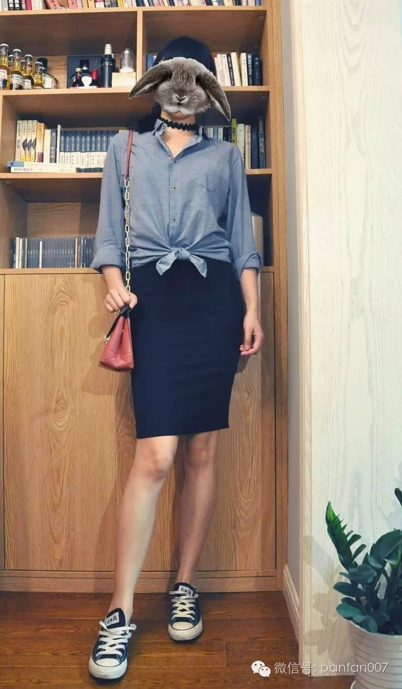
如果穿了球鞋或帆布鞋，建议上身就不要再搭配什么T恤背心之类的东西了，以免显得过分懒散邋遢。
最好的选择当然是衬衫，而在选择衬衫的时候，最好是以棉麻真丝雪纺质地的阔型艺术家衬衫为主，就是这种东西：
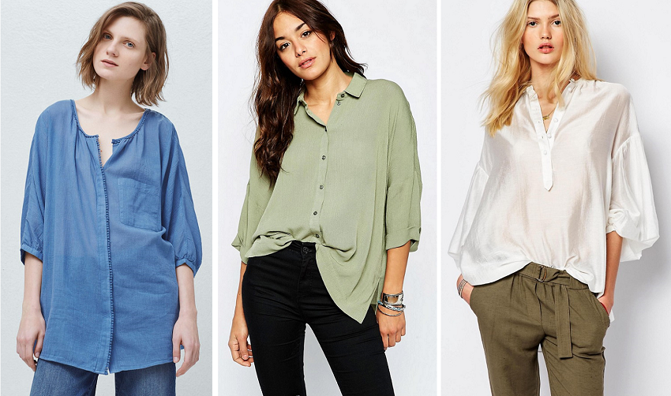一来避免上身太正式而和球鞋放在一起显得不伦不类；二来此类衬衫挽起袖口衣襟打结是最好看的，布料软而薄，打的结不会很大一坨，更不会翘起来。
没有比这身装扮更适合去唱K跟吃夜宵大排档的了，在一堆KTV球形灯下的高跟鞋蓬蓬裙里，帮你加满easy&chic的分。
2、配卫衣一样合理！
既然包臀裙可以配球鞋，又为什么不能配卫衣呢？

一样的道理，如果上身穿了卫衣，我会建议在鞋子的选择上不要太过放松。
如果穿什么人字拖之类的……会不会太过松懈了？
万一遇到前男友呢？万一碰到金城武呢？结果你看起来就像下班衣服换一半赶去楼下倒垃圾！
最合适卫衣+包臀裙的鞋，是粗跟/锲形跟/厚底的凉鞋/罗马鞋/鱼嘴踝靴/穆勒鞋，总而言之，脚上多少你得露点肉，鞋子多少得有点巧思和造型，才能让你看起来是好好打扮过的。
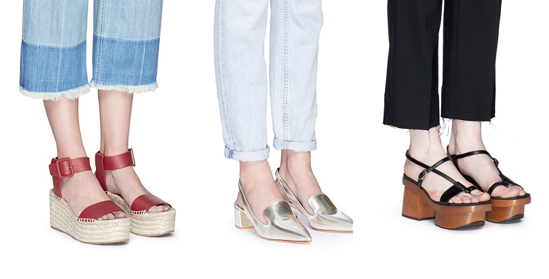
此时最好的装饰品是一顶针织帽，会让你看起来更有休闲随性的时髦。
这身是要去干嘛的呢~当然就是要雄纠纠气昂昂地挽着蓝朋友去逛冷气开很足的水族馆嘛！
3、包臀裙+细高跟也能穿出休闲感
中长包臀裙有个无法忽略问题就是容易显腿短，因为它毫不留情的告诉了所有人你的臀线在哪里。
臀线下面，不就是腿嘛？
所以当然不可以放弃腿长神器浅口细高跟鞋，于是自然而然的，女律师女banker急匆匆滴滴哒走在写字楼里的形象……又回来了……
然而，浅口细高跟+一步裙，也是有休闲的可能的！需要两样东西来拯救：牛仔夹克和链条斜挎包。
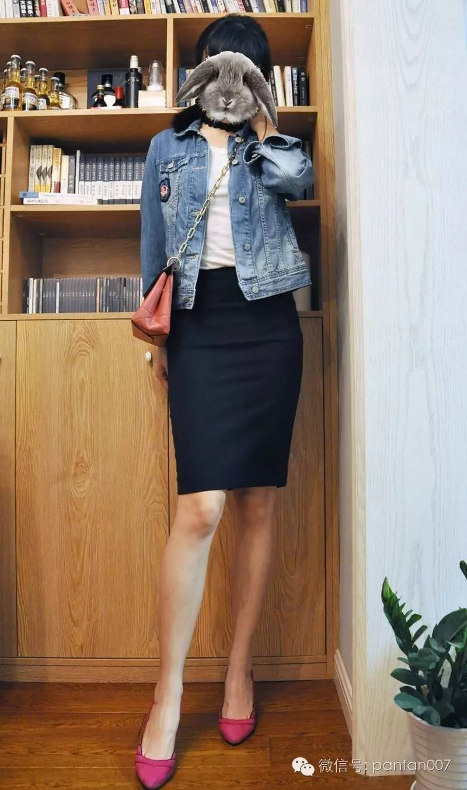
牛仔夹克是一种十分神奇的物件。
第一，百搭，甚至比皮夹克还要百搭，所以就算和包臀裙高跟鞋一起出现也无碍；
第二，无论你穿得多么严肃，它都可以毁掉你所有的正式感，把你变成一个准备去BBQ或是参加什么音乐节的休闲人士。
外套里面Pan一般就穿一件T恤或是吊带之类的内搭，重要的是这只链条斜跨小包，这是让一切扮相更年轻更活泼的关键。
这一身太适合轻松约会了，因为所有直男都能轻而易举看懂——你知道的，对他们的时尚一根筋来说，只要有细高跟+包臀的裙子，什么都好说……
4、高腰包臀裙配一切高腰套头衫——不胖人士永远的选择
这样的扮相2014年兴起之后就再也没有退潮过，请忽略我粗了两厘米的腰。
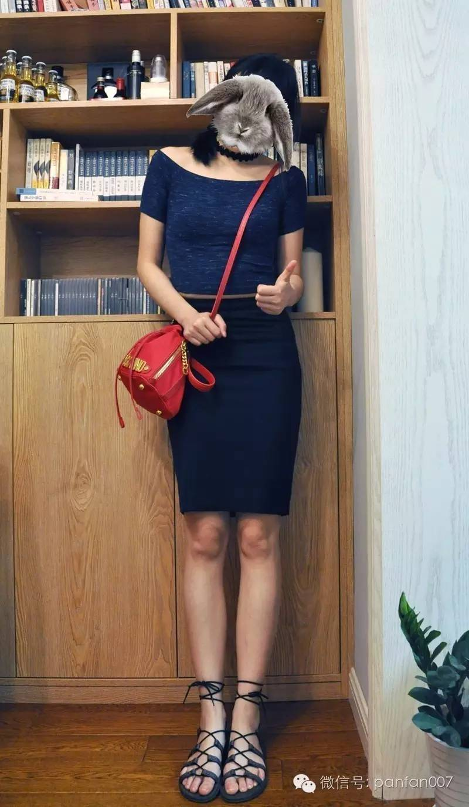
这一条，小腹过分突出的各位还请绕行，即便是我照片中穿的这种不露脐的款式，也是遮挡不住的，从侧面看随时都会是一副刚吃饱的样子……
除了腿不够长的各位需要穿上锲形鞋和粗跟鞋以外，这种搭配没有任何要求。
但是我就不太建议这样穿的时候配细高跟。
套头短上衣+包臀裙的精髓应该是90风的少女感，轻巧、活泼、小性感、俏皮，如果穿上细高跟，就破坏了其中的灵巧，性感就会占上风，让我们的套头短上衣女王霉霉来给各位示范一下：
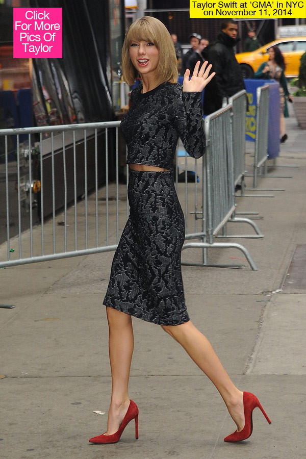
当然不是说不好看，只是，我们这分钟聊的不就是轻松休闲么？这样就回归到性感啦。
我承认不是每个女人都需要穿一步裙才能过人生，也承认A字裙比起一步裙来，更亲民、更万能也更好搭。
但是，一直一直地穿A字裙，岂不是很无聊？
人生苦短，对Pan来说，最有趣的事情就是把什么东西都拿来穿穿看，即便不够美，至少有意思啦，建议大家也勇敢买起来！